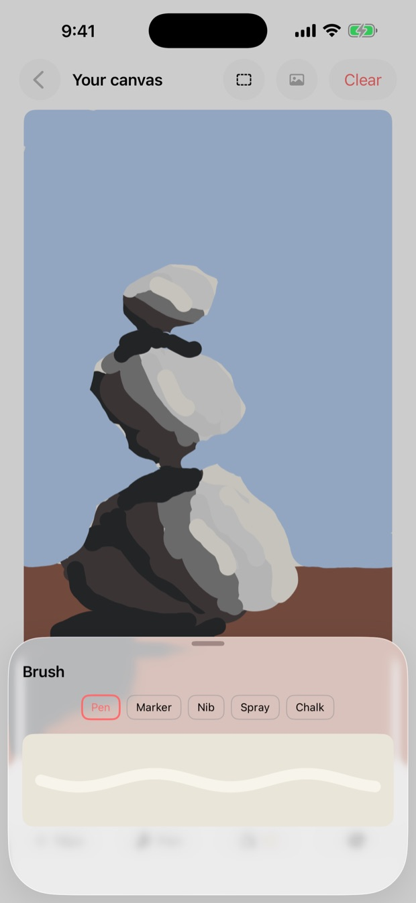
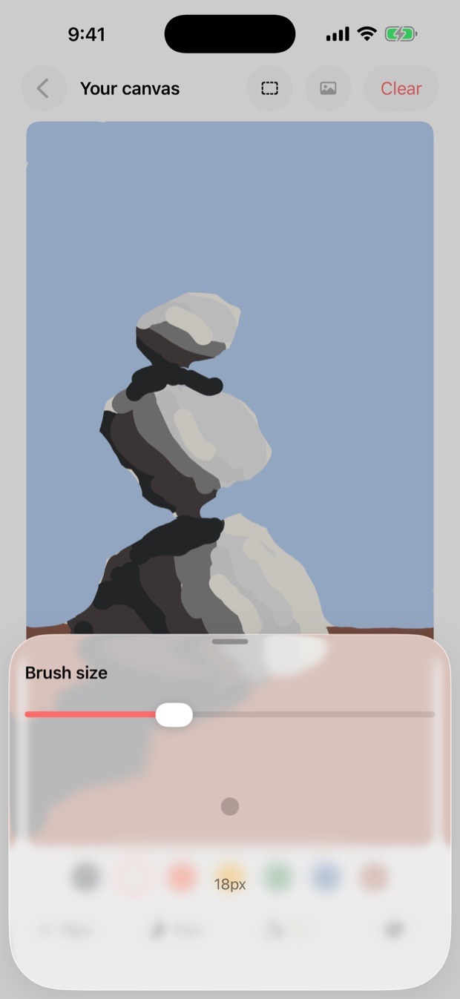
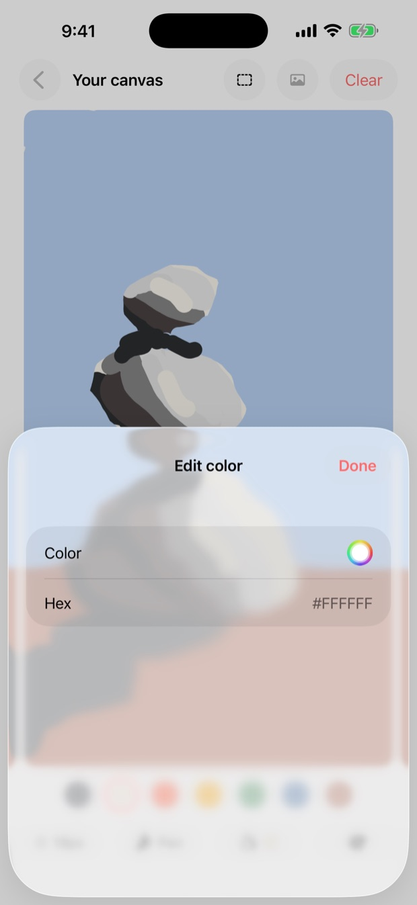
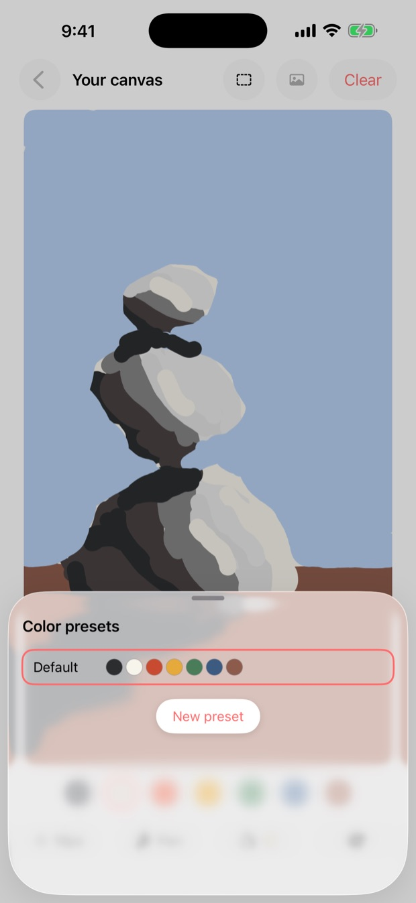
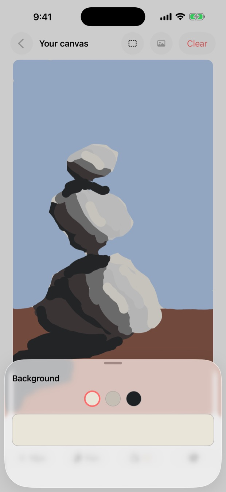
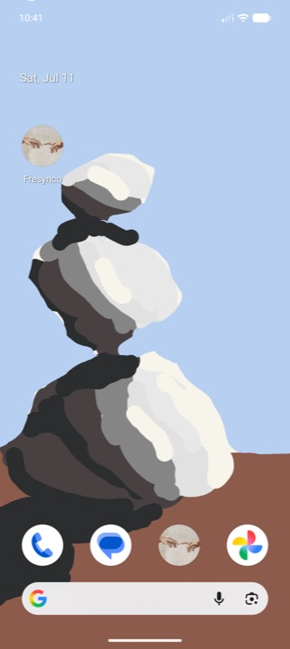
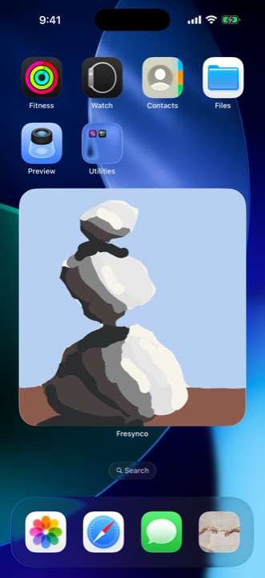

Your wallpaper, drawn together.
Add friends with a short code and draw on each other's home screens. Every stroke appears live: a true live wallpaper on Android, a home-screen widget on iOS.
Scroll to connect
One paints. The other's wallpaper paints itself.
A friend draws in the app and every stroke lands on your home screen as it happens. No refresh, no send button.





A canvas you share, not just a wallpaper
Everyone you add gets to draw. Every stroke lands on your home screen in real time.
Live, not delayed
When a friend draws, your wallpaper repaints within milliseconds. No refresh, no waiting.
Draw together
Multiple friends can draw on the same canvas at once. Strokes simply stack, so there's never a conflict.
Add by friend code
Share a short code to connect. Friendship is mutual, and only friends can draw on your canvas.
Expressive brushes
Pick colors and brush styles and sketch anything: a doodle, a note, a good-morning surprise.
You stay in control
It's your canvas. Clear it whenever you like. Only the owner can wipe it clean.
Light on data
No password to remember. We keep what's needed to sync your canvas, and nothing we don't.

Built for each home screen
We use the right native surface on each platform so it feels at home.

Android: true live wallpaper
Fresynco runs as a live wallpaper that owns your home-screen surface and repaints the instant a friend draws.

iOS: home-screen widget
Add the Fresynco widget to your home screen. It updates live while the app is open and refreshes in the background otherwise.
Up and running in a minute
Three steps and your friends can start drawing.
Pick a username
Choose a name and you're in. No password, no email signup required.
Set your canvas
Set Fresynco as your live wallpaper on Android, or add the widget on iOS.
Share your code
Send your friend code. Once they add you, draw on each other's screens, live.
Make your home screen something you share
Download Fresynco Canvas and add your first friend today.